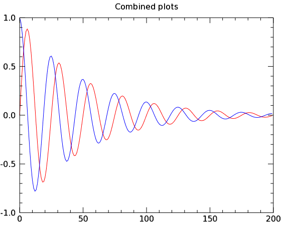
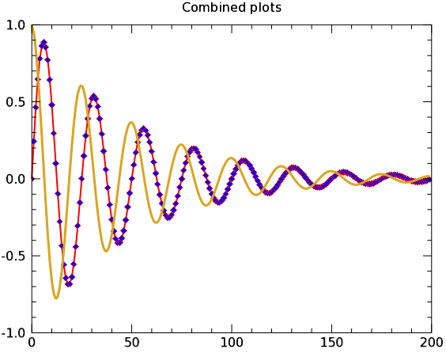
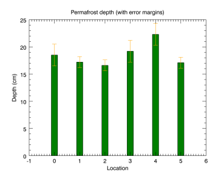
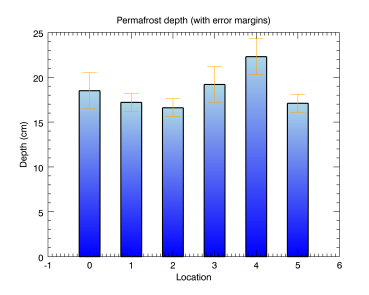

You can easily change graphics properties from the command line after the graphics are initially created. This functionality allows you to quickly try a different color, text size, or line thickness in your graphics.
Note: Some graphic properties can be changed interactively (from the command line after creation). Others are available only when you are creating a graphic. Each graphic function lists all the avaliable properties. The properties that can be set at creation are marked as "Init" for initialization. See the list of Graphics
See the examples below to learn how to work with graphics properties.
The following example shows two different plots displayed in one graphics window.

The code shown below creates the graphic shown above. You can copy the entire block and paste it into the IDL command line to run it.
; Define some data for two plots.
sinewave = SIN(2.0*FINDGEN(200)*!PI/25.0)*EXP(-0.02*FINDGEN(200))
cosine = COS(2.0*FINDGEN(200)*!PI/25.0)*EXP(-0.02*FINDGEN(200))
p1 = PLOT(sinewave, '-r')
p2 = PLOT(cosine, '-b', /OVERPLOT, $
TITLE = 'Combined plots')
To see an explanation of the properties for these plots, see Multiple Graphics in One Window .
You can change the properties of either plot, using the variable name of each plot along with the "dot" syntax. The plot graphics here show several of the properties that you can change interactively. Try these commands at the command line to see the changes to the plots:
p1.thick=2 ; changes the line thickness
p1.SYMBOL='D' ; changes the plot line symbol
p1.SYM_FILLED=1 ; fills the plot line symbol
p1.SYM_FILL_COLOR='blue' ; changes the symbol color
p2.color='goldenrod' ; changes the plot line color
p2.thick=3 ; changes the plot line thickness
These command-line changes result in the plots looking like this:

See the PLOT function for a list of the PLOT properties that you can change from the command line.
The BARPLOT and ERRORPLOT functions have many of the same properties as the PLOT function, but also contain some unique properties that you can change interactively. The following example shows some of them:

The code shown below creates the graphic shown above. You can copy the entire block and paste it into the IDL command line to run it.
; Define the data
loc = INDGEN(6)
depth = [18.5, 17.2, 16.6, 19.2, 22.3, 17.1]
depth_error = [2.0, 1.0, 1.0, 2.0, 2.0, 1.0]
; Create the barplot
bplot = BARPLOT(depth, FILL_COLOR='green', $
YRANGE=[0,25], WIDTH = 0.25)
; Create the error plot on top
eplot = ERRORPLOT(depth, depth_error, $
LINESTYLE = 6, $
ERRORBAR_COLOR = 'orange', $
ERRORBAR_CAPSIZE = 0.25, $
XTITLE='Location', YTITLE='Depth (cm)', $
TITLE='Permafrost depth (with error margins)', $
/OVERPLOT)
You can change the properties of either plot (shown above), using the variable name of each plot along with the "dot" syntax. The plot graphics here show several of the properties that you can change interactively. Try these commands at the command line to see the changes to the plots:
; FILL_COLOR changes the bar plot color
bplot.FILL_COLOR='light_blue'
; WIDTH changes the bar width
bplot.WIDTH=.50
; THICK defines the line thickness around the bars
bplot.THICK=2
; BOTTOM_COLOR defines the
; bar shading color from the bottom
bplot.BOTTOM_COLOR='blue'
; ERRORBAR_CAPSIZE changes error cap size
eplot.ERRORBAR_CAPSIZE=.50
These changes result in a plot that looks very different:
